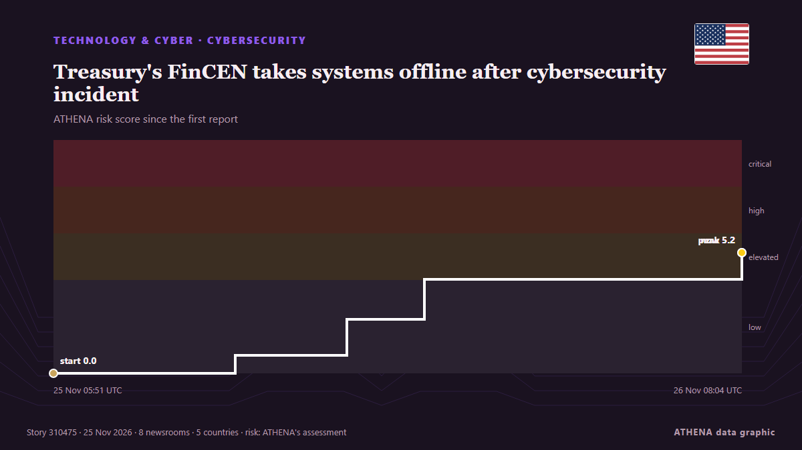

Τεχνολογία, ΤΝ & Κυβερνοασφάλεια
ΧορηγούμενοΠαρουσιάζεται από  Cybernetics and Artificial Intelligence Lab Welcome to the Cybernetics and Artificial Intelligence Laboratory, established at the Department of Business Administration of the National and Kapodistrian University of Athens. The lab is headed by Professor Dimitrios Thomakos. The lab aims to do research that can be published in top venues. Our research uses tools and methods of Artificial Intelligence, and lies in the following areas: - Forecasting - Decision making - Cyber security - Finance We are always looking forward to collaborating with exceptional students!
Cybernetics and Artificial Intelligence Lab Welcome to the Cybernetics and Artificial Intelligence Laboratory, established at the Department of Business Administration of the National and Kapodistrian University of Athens. The lab is headed by Professor Dimitrios Thomakos. The lab aims to do research that can be published in top venues. Our research uses tools and methods of Artificial Intelligence, and lies in the following areas: - Forecasting - Decision making - Cyber security - Finance We are always looking forward to collaborating with exceptional students!
Οι τίτλοι των ειδήσεων παρουσιάζονται στα αγγλικά, όπως δημοσιεύτηκαν.

ΚυβερνοασφάλειαTreasury's FinCEN takes systems offline after cybersecurity incident
The Treasury Department has taken some systems offline after a cybersecurity incident that “resulted in unauthorized access to a limited subset of its systems.” από The Record (Recorded Future News)
| 13 Νοε | 87 |
|---|---|
| 14 Νοε | 39 |
| 15 Νοε | 44 |
| 16 Νοε | 117 |
| 17 Νοε | 105 |
| 18 Νοε | 105 |
| 19 Νοε | 105 |
| 20 Νοε | 65 |
| 21 Νοε | 30 |
| 22 Νοε | 45 |
| 23 Νοε | 91 |
| 24 Νοε | 72 |
| 25 Νοε | 55 |
| 26 Νοε | 11 |
Vance says Jensen Huang won't need a pardon as scrutiny of Nvidia scandal builds in Washington
WRIGHT-PATTERSON AIR FORCE BASE, Ohio (AP) -- Vice President JD Vance on Wednesday played down the possibility that Nvidia CEO Jensen Huang could need. από Mainichi (English)
US finds no evidence China directed executive to spy on Nvidia CEO, WSJ reports
U.S. officials found no evidence that tech executive Alice Huang was directed by Beijing to spy on Nvidia CEO Jensen Huang, the Wall Street Journal reported on Wednesday, citing people familiar with… από The Korea Times
US stocks end mixed as Nvidia, Anthropic losses drag Nasdaq lower
Dow gains more than 400 points as chip stocks weigh on S&P 500. από Anadolu Agency (English)
Anthropic chief denies wanting humans to 'surrender' free will to AI
Anthropic chief executive Dario Amodei on Wednesday denied wanting humanity to give up its free will to AI, calling it “absurd” to attribute the idea to him as rival tech leaders push back. από Dawn
Hong Kong mobile carrier restores services after widespread network outage
SmarTone apologizes to customers after disruption to phone calls, mobile internet services across several districts. από Anadolu Agency (English)
Belgium inaugurates Europe’s largest satellite factory
Belgium’s King Philippe on Tuesday, Nov. από Kyiv Post
Palestinian journalist killed by Israel in Gaza wins prestigious Rory Peck award
Mariam Abu Dagga, killed in an Israeli air strike on a Gaza hospital in August 2025, shares the award with two colleagues for documenting the human cost of the war. από TRT World
Apple pulls MiniMax AI chatbot from App Store over child safety concerns
App removed after alleged inappropriate interactions with minors. από The Straits Times
Nvidia chip scandal: How Alice Huang's $270m network is linked to China's military
Suspected China spy linked to Nvidia's ex-boss left in 2025, Megaspeed says. από Ada Derana
US officials divided over Chinese spying allegations following Jensen Huang's return
Days after President Donald Trump declared Nvidia CEO Jensen Huang was not a security threat to the United States, a central question remains unanswered: was the woman Huang was having an affair… από Business Recorder
US Authorizes SpaceX to Deploy 1 Million Satellites for Data Centers in Space
Project aims to meet the growing demand for computing infrastructure driven by development of AI. από Express Tribune
Alice Huang-linked firms listed US$270 million in AI servers in China, records show
Businesses linked to her family and associates have helped finance and equip the nation’s AI sector. από The Business Times
Trump's accounts traded Nvidia shares 44 times this year, records show
A review of the US president's financial disclosures shows Donald Trump's investment portfolios have regularly traded shares in the tech giant. από BBC Business
Amazon and Meta in talks to end the Muse blockade, Fortune reports
Amazon and Meta are in talks over a deal that would let Meta’s Muse AI agent shop on Amazon. από The Next Web
AI consumes less water per dollar spent than almond milk or golf: Report
The report puts US$25 (S$32) a month of AI spending at about 1.9 gallons of water consumption. από The Straits Times
Ukrainian journalists outnumbered 30 to 1 by Russian propagandists during Oleshky evacuation, reporter says
According to Romakhlo, the Russian side attempted to portray Ukraine as responsible for the humanitarian crisis in Oleshky. από Kyiv Independent
Microsoft Declares ‘Code Red’ After Historic 24-Hour Outage
Internal memos show Microsoft wants future outages fixed worldwide within an hour after a November failure knocked out Outlook and Teams globally. από To Vima (English)
Etsy Rewrites AI Training Terms After Sellers Close Shops
Etsy sellers upload photos, artwork and descriptions so shoppers can find and buy what they make. από PYMNTS
Nvidia board joins Jensen Huang under scrutiny after reinstating embattled CEO
Jensen Huang has been under a spotlight for weeks, but after the 11-day period of disorder that included the resignation and reinstatement of the Nvidia executive, the company's board is joining him… από The Korea Times
China's Shenzhou-24 spaceship docks with Tiangong space station
China to launch Shenzhou-24 crewed spacecraft on November 25. από CGTN (China)
European Commission Proposes Quantum Act and New Sovereign Tech Equity Fund
Insider Brief PRESS RELEASE — The European Commission today proposed the Quantum Act, a new framework to help turn Europe’s quantum research into products and services, strengthen supply chains and… από The Quantum Insider
China sends first foreign astronaut to its space station as Pakistani joins Shenzhou 24 crew
The crew will carry out more than 90 scientific experiments and technology tests. according to China's state media reports. από Euronews English
The Saudi engineer accused of bugging OpenAI is set to be released on a $1 million bond
Judge Alex Tse allows Saudi ex-OpenAI engineer Abdulrahman Alfozan to await trial at home. από Business Insider
China's Shenzhou-24 docks with Tiangong, welcomes Pakistani astronaut
China rocket blasts off on Shenzhou-24 mission: state media. από Gulf News
Anthropic and OpenAI staff reportedly warn unreleased models may be too powerful to release safely
Many employees at Anthropic and OpenAI no longer believe the companies' most powerful unreleased models can be released safely, Axios reported on November 24, 2026, citing more than two dozen sources… από DigiTimes Asia
Blanche Dodges Questions About Jensen Huang Investigation After His Reinstatement
Blanche called Nvidia a “good corporate citizen” at a press conference on Tuesday. από Forbes Business
US Robot Submarine Finds World’s Deepest Explosive Volcanic Eruptions In Mariana Trench
Scientists sampling the Mariana Trench walls found pyroclastic rock at 6,148 metres, the deepest sign of explosive eruptions ever found in the ocean. από Marine Insight
Virginia, Oregon sue Musk's SpaceX over Grok AI's creation of child sexual abuse images and videos
Nov 23 - Virginia and Oregon are suing Elon Musk's SpaceX Super Intelligence Corp, alleging the company profited from a feature in its AI model Grok that produces child sexual abuse material and… από The Straits Times
Nato vows space defence after Russia nuclear satellite report
German media has reported that Russia plans to launch a satellite dubbed “Sputnik-S”, reportedly equipped with a nuclear warhead, in the coming weeks. από The Straits Times
8 years, 10 billion km: Japan-Europe spacecraft enters Mercury's orbit
The BepiColombo mission, a collaboration between Japan and Europe, has reached Mercury's orbit after an impressive journey exceeding 10 billion kilometers since its 2018 launch. από Times of India
GTA VI hacker released despite being sentenced to 7 years in UK prison
Arion Kurtaj, 21, who leaked 90 gameplay videos in 2022, released on license after court accounts for time spent in custody and hospital. από Anadolu Agency (English)
EU Commission confirms personal data leak after cyberattack, warns of further disruption
Names and email addresses were leaked in the cyberattack, according to one EU official, who warned that the full extent of the breach remains unclear. από Politico Europe
Peter Gabriel – “Yes, It Will Go”
Like so many of us these days, Peter Gabriel is thinking a lot about artificial intelligence. από The National Herald
U.S. adds Megaspeed to trade blacklist over export control concerns amid Nvidia controversy
The U.S. has added Megaspeed and six other companies to its trade blacklist over concerns about the potential diversion of advanced computing products. από CNBC World